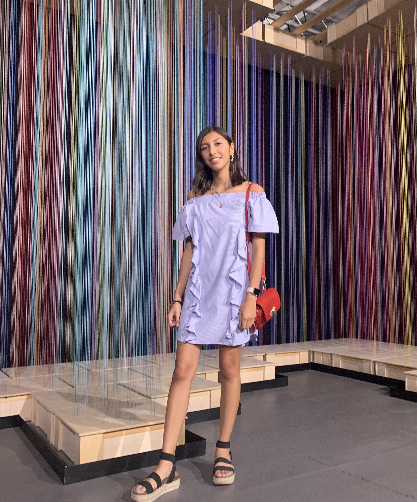

Virtual Field Trip Team:
Kaitlyn Martinez

Through this project I learned how to communicate with my peers as well as the greater world through media.
Aedan Rivas

Bianca Hurtado
Jennifer Maldonado
What I learned throughout this project was how to communicate with people through virtual technology. I got the opportunity to read and ask questions when we were interviewing the people of Garfield. I got to hear different perspectives and points of view of what had been happening in the Garfield community. I especially learned the true meaning of “Gentrification” and “Revitalization,” how it really is a problem and how more people have to be familiarized with the topic.
This project is important to me because it didn’t just inspire me educationally, but personally as well because I got to hear different stories of how people are being forced out of their homes owing to the fact that they can't afford to live in their childhood homes. When interviewing Blanca Collazo, a 17 year old girl who has lived in Garfield her whole life, and when realizing that gentrification is happening in her community, she decided to do something about it. This inspired me to open a club at my school so that us, as well as future generations, are aware of the topic in order to make a difference. The current and future generations have to be that change, because gentrification is happening, and not just in the Garfield community, but through different communities throughout the country. I hope that with this project, it gets everyone’s attention. Especially younger generations so that we can try and help prevent this from happening as well as stopping it.
Aubrey Harvey

Throughout this project I learned more about how to interview someone. How to ask questions about what we want to know about. I also learned more about photoshop. Before this I didn’t know much about photoshop. I also learned how to take a 360 picture. Also learned more about how a video gets edited and finding out how to make the video more exciting.
This project was important because I like to find different ways to tell a story. Also I wanted to see if video production is something I would be interested in. Also learning about a new place I never knew about.
Brandon Friedman

I learned how to do quite a few things. I learned how to color correct in photoshop, as well as how to do simple edits in Premiere Pro. However to me, the most important thing I’ve learned how to operate multiple types of cameras. From 4K DSL’s to 3D cell phones, I’ve done it all.
Will Eggert

Sandra Beltran

Throughout this project I learned how to improve my interviewing skills. It is important to know how to interview because everyone’s point of view is important. We all have a story to share. I also learned that there are multiple ways of showing a story. Such as VFT’s (Virtual Field Trips), which can take you to a place in the world virtually. Within that, there are 360 photographs and videos that can be seen. I had the chance to take a couple 360 pictures with a sphere camera and within that sphere camera, there were 36 cameras. This captured the surroundings of the camera. This project was definitely a great experience for me. Many learning skills improved.
This project was important to me because I believe that everyone’s story should be heard. Without everyone’s voice, nothing would be interesting. Although I had never heard of a city called Garfield, it was amazing to hear about the people’s story. They all had their different opinions. I hope to see Garfield thrive throughout the upcoming years.